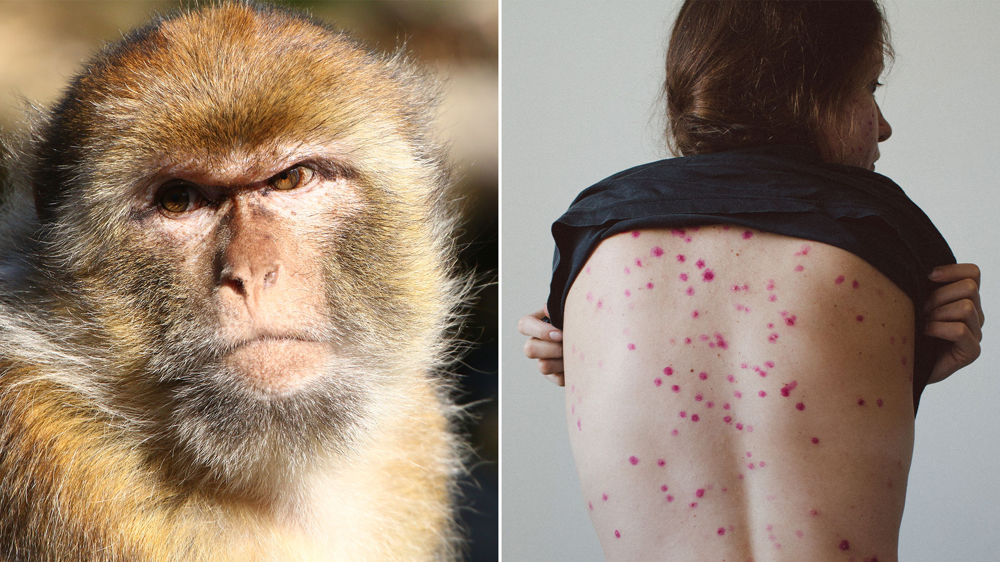
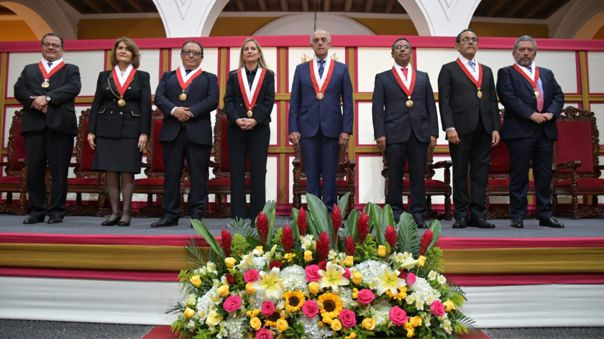

 El Ministerio de Salud (Minsa) declarará a partir de mañana, 20 de mayo, la alerta sanitaria ante la llegada de posibles casos de la viruela de mono, luego de que se reportaran varios casos alrededor del mundo. Así lo anunció el titular del Minsa, Jorge López, en una conferencia de prensa, en la que, además, confirmó que aún no se han reportado casos de esta enfermedad en el Perú. “Estamos declarando la alerta. Debemos estar generándola el día de mañana. En nuestro país, no tenemos ningún caso, pero sí está declarándose la alerta para prevenir cualquier eventualidad”, manifestó. “Hay que tener los cuidados, como todos; y el monitoreo de nuestra población continua”, añadió, tras adelantar que se evaluará la compra de vacunas para prevenir este mal. La viruela del mono, enfermedad habitualmente endémica en África, tiene como síntomas principales fiebre, dolor de cabeza, dolores musculares, dolor de espalda, ganglios linfáticos inflamados, escalofríos y fatiga. También pueden aparecer erupciones cutáneas, especialmente en la cara, y expandirse a otras partes del cuerpo. Varias decenas de casos sospechosos o confirmados de viruela del mono se han detectado desde principios de mayo en Europa y América del Norte, lo que hace temer un inicio de propagación de esta enfermedad a nivel mundial.
 Augusto Ferrero, presidente del Tribunal Constitucional, anunció que la agenda de los nuevos miembros de la institución priorizará la demanda sobre la convocatoria a referéndum para llamar a una asamblea constituyente, así como aquella referida a la distribución del anticonceptivo oral de emergencia o “píldora del día siguiente”, por parte del Estado. Ferrero mencionó esos dos temas durante su discurso pronunciado en la ceremonia de presentación de los flamantes magistrados del TC. Al respecto, señaló que, en general, los asuntos que se tratarán son “de suma trascendencia”. El Tribunal Constitucional verá los casos del referéndum constitucional y de la ‘píldora del día siguiente’, pero el magistrado también añadió el de la aplicación del mecanismo de consulta previa a las comunidades nativas frente a las actividades extractivas. Otro tema que se abordará en el nuevo TC es el de la maternidad subrogada, es decir, el acto de engendrar, previo acuerdo, a un ser humano para luego entregarlo al cuidado de otra persona o pareja. Ferrero ofreció también desarrollar una política de “puertas abiertas” para que la ciudadanía pueda conocer el trabajo que allí se efectúa. Esto es parte de “una nueva etapa en nuestra institución”, manifestó en su discurso. Durante la ceremonia se dio lectura a la resolución de designación de los nuevos integrantes del TC y a los nombres de quienes reemplazan. Además de Ferrero, integran este tribunal a partir de hoy Francisco Morales Saravia, Luis Gutiérrez Ticse, Helder Domínguez Haro, Luz Pacheco Zerga, Manuel Monteagudo Valdez y César Ochoa Cardich.
 Iniciar Sesión
Iniciar Sesión